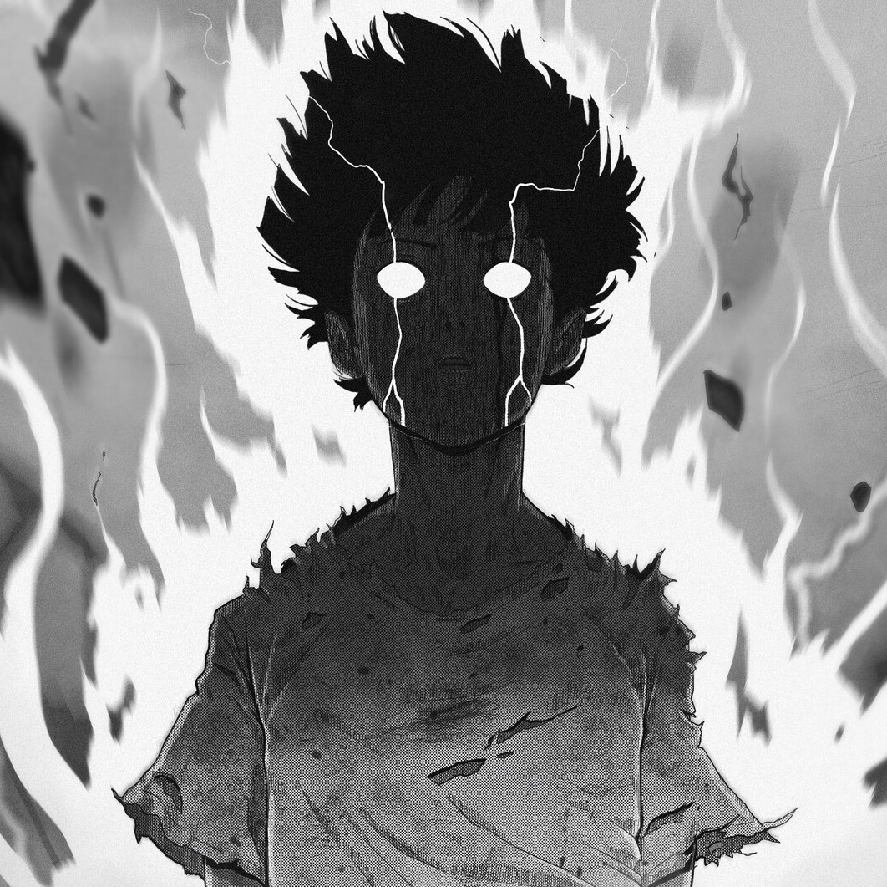

Mob Psycho 100
Mob Psycho 100 (Japanese: モブサイコ100, Hepburn: Mobu Saiko Hyaku) is a Japanese web manga series written and illustrated by One.
ViewMob Psycho 100
Theme: Super Power
TV Series
23 Mins
Jul 2016
- Eighth-grader Shigeo "Mob" Kageyama has tapped into his inner wellspring of psychic prowess at a young age. But the power quickly proves to be a liability when he realizes the potential danger in his skills. Choosing to suppress his power, Mob's only present use for his ability is to impress his longtime crush, Tsubomi, who soon grows bored of the same tricks.
- In order to effectuate control on his skills, Mob enlists himself under the wing of Arataka Reigen, a con artist claiming to be a psychic, who exploits Mob's powers for pocket change. Now, exorcising evil spirits on command has become a part of Mob's daily, monotonous life. However, the psychic energy he exerts is barely the tip of the iceberg; if his vast potential and unrestrained emotions run berserk, a cataclysmic event that would render him completely unrecognizable will be triggered. The progression toward Mob's explosion is rising and attempting to stop it is futile.